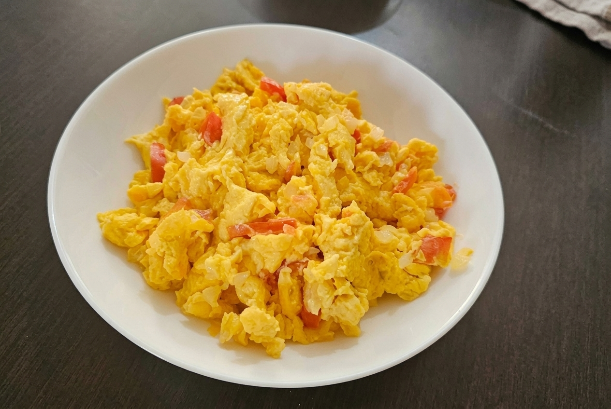
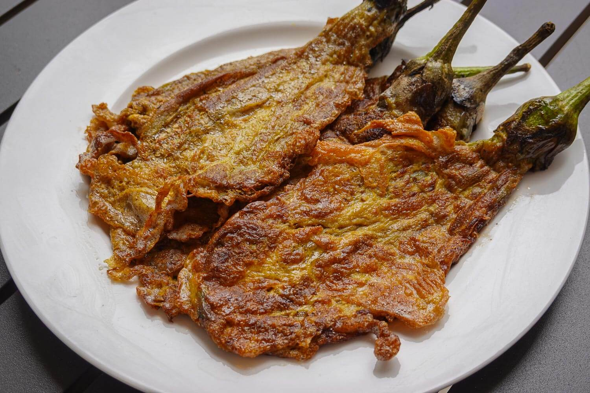

🇵🇭 Lasang Pinoy, kwentong itlog
Ang Paborito
Ang Paborito
Kong Itlog.
Street food man, pang-ulam, o simpleng almusal— tara, tuklasin natin ang sarap at kuwento ng mga pagkaing Pinoy na may itlog!

Sarap ng Itlog,Sarap ng Pinoy eggs!
Paborito ng bayan
Tikman ang classics
Mula sa malutong na street food hanggang sa comfort food sa bahay, bawat putahe ay may sariling kuwento.

Bakit itlog?
Simple ang sangkap,
Simple ang sangkap,
maraming kuwentong Pinoy.
Ang itlog ay bahagi ng maraming lutong-bahay at pagkaing-kalye. Madaling hanapin, maraming paraan ng pagluluto, at puwedeng maging bida o kasama sa isang putahe.
-
✓
Discover
Makilala ang iba’t ibang Filipino egg dishes. -
✓
Cook
Subukan ang beginner-friendly recipes at ingredient checklist. -
✓
Learn
Subukin ang kaalaman sa interactive na Itlog Quiz.